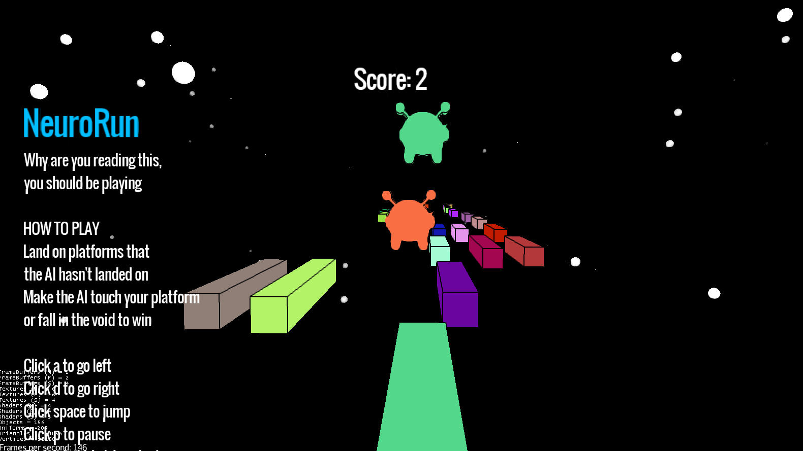

Click the button below to play NeuroRun
(If you don't know, this is where I use NEAT to beat my adaptation of the game RUN)
Make sure you have java installed
If it says the application is untrusted, open Java Control Panel and add this website(https://ashayp.com) to the exceptions
